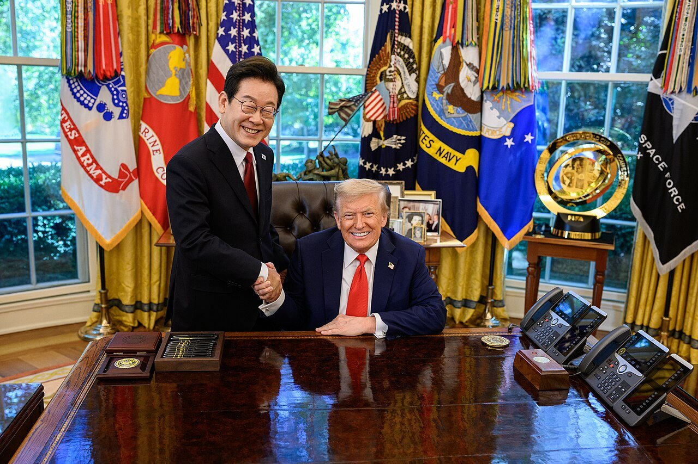
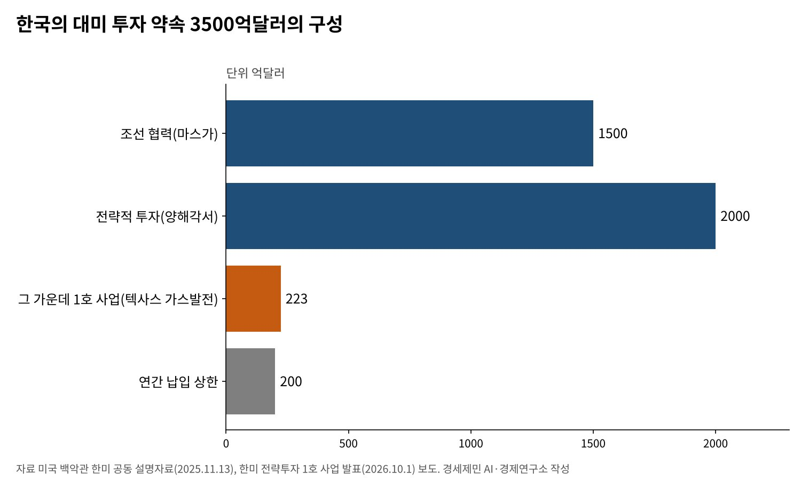
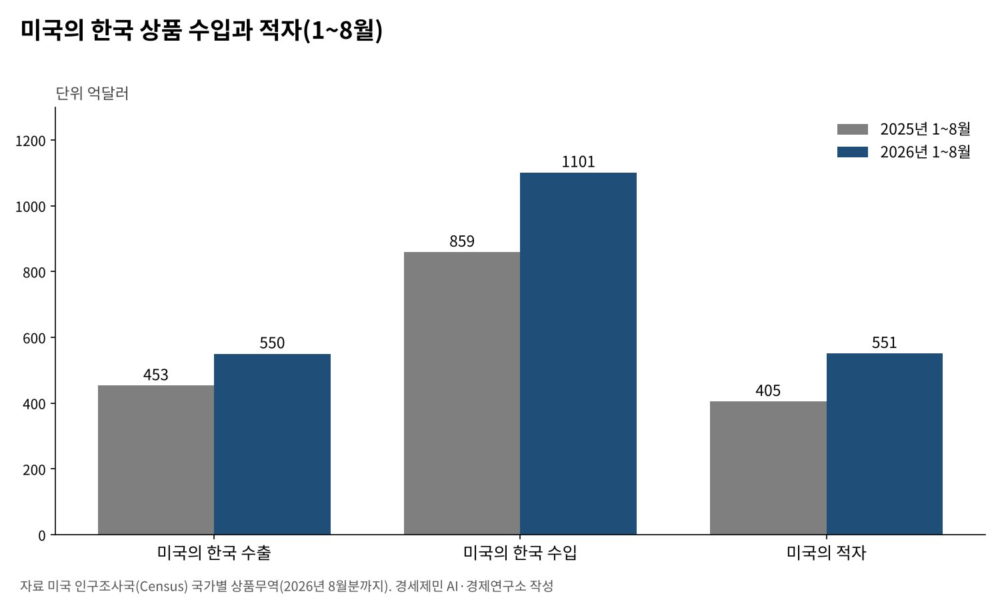

[트럼프 관세전쟁④] 「나머지는 15~20%」 발언과 한미 관세협상
「15~20%」는 그대로 가격표가 됐고, 한국은 맨 아래 15%를 3500억달러 투자로 샀다
연간 납입 상한 200억달러, 특별법 2026년 3월 통과, 1호 사업은 텍사스 가스발전 223억달러
대법원 판결 뒤 국가별 관세는 12.5%, 미국은 「어떤 형태든 15% 수준 유지」를 전했다
2025년 7월 28일 트럼프 대통령은 나머지 나라 관세가 15~20% 범위일 것이라고 다시 말했다. 한국은 25%를 통보받은 채 8월 1일 시한을 사흘 앞두고 있었다. 이 글은 그 발언이 한국 협상에 무엇을 뜻하는지 물었다.
결과는 그 범위 안에서 나왔다. 한국은 7월 30일 15% 관세에 합의했다. 대가는 3500억달러 대미 투자 약속이었다. 협상은 그 뒤로도 1년 넘게 이어졌다.
「15~20%」 발언이 어떻게 가격표가 됐는지 미국 행정명령과 한미 공동 설명자료로 짚는다. 그 가격을 치른 뒤 무엇이 바뀌었는지도 따진다.
1. 「15~20%」는 가격표였다
트럼프 대통령은 2025년 7월 31일 행정명령 14326호로 나라별 상호관세율을 정했다. 일본과 한국은 15%다. 태국·말레이시아·캄보디아·인도네시아·필리핀은 19%, 베트남과 대만은 20%다. 목록에 없는 나라에는 10%를 매겼다.

인도는 25%, 스위스는 39%를 받았다. 미국과 큰 흑자를 내는 아시아 교역국은 대부분 15~20% 사이에 섰다. 발언은 협상 압박이자 미리 내건 가격표였다. 한국이 받은 15%는 그 범위의 맨 아래다.
15%를 받은 나라는 모두 큰 투자를 약속했다. 일본은 5500억달러, 유럽연합(EU)은 6000억달러 투자와 에너지 7500억달러 구매를 약속했다. 한국은 7월 30일 3500억달러 투자를 약속했다.
2. 3500억달러의 구조, 연간 200억달러 상한
세부 조건을 두고 협상은 석 달 더 이어졌다. 두 정상은 2025년 10월 29일 경주 회담에서 3500억달러를 둘로 나눴다. 2000억달러는 현금 투자로 하되 한 해 200억달러를 넘지 않는다. 1500억달러는 한국 기업이 이끄는 조선 협력에 쓴다.
미국 백악관이 11월 13일 낸 한미 공동 설명자료는 이 구조를 적었다. 한국은 어느 해에도 200억달러가 넘는 금액을 낼 의무가 없다. 상한은 외환시장 변동을 줄이려는 장치라고 한국 정부는 설명했다.
같은 자료에서 미국은 한국 상품 상호관세를 15%로 하고 자동차·부품, 목재 관세도 15%로 내리기로 했다. 의약품 관세는 15%를 넘기지 않는다. 반도체는 비슷한 교역 규모의 다른 나라보다 불리하지 않게 대우하기로 했다.

미국은 12월 4일 관보에 자동차 15%를 11월 1일로 거슬러 적용한다고 고시했다. 상호관세 15%도 기존 관세를 포함한 상한으로 바꿨다. 유럽연합과 일본이 받은 방식과 같다. 관세가 겹쳐 쌓이는 것을 막았다.
3. 특별법을 둘러싼 두 달
합의는 한 차례 흔들렸다. 트럼프 대통령은 2026년 1월 26일 한국 국회가 합의를 이행하지 않는다며 자동차·목재·의약품 관세를 25%로 올리겠다고 밝혔다. 한국 정부는 이행 의지를 미국에 전하겠다며 차분히 대응했다.
김정관 산업통상부 장관은 3월 9일 합의가 이행되면 관세 인상의 공식 발표는 없을 것이라고 말했다. 국회는 3월 12일 「한미 전략적 투자 관리를 위한 특별법」을 재석 242명 가운데 찬성 226명으로 통과시켰다.
특별법은 한미전략투자공사를 세우고 한미전략투자기금을 둔다. 사업관리위원회가 후보 사업을 검토하고 운영위원회가 최종 결정한다. 머니투데이 보도로는 상업적 타당성이 부족한 큰 투자는 국회 상임위원회의 사전 동의를 받아야 한다.
4. 1호 사업과 대법원 판결 뒤의 관세
두 나라 정부는 9월 22일 국회 보고를 거쳐 10월 1일 전략투자 1호 사업을 발표했다. 텍사스주에 짓는 6.4기가와트 규모 가스복합화력발전소로 투자액은 223억달러다. 인공지능 데이터센터에 전력을 대는 사업이다.
대형 원전 8기 건설은 기본 틀에 서명했지만 개별 사업은 타당성 검토를 거친다. 알래스카 액화천연가스(LNG) 사업은 검토를 시작하는 데 그쳤다. 전략 투자 총액은 어떤 경우에도 2000억달러를 넘지 않는다.
그사이 관세의 법적 근거가 바뀌었다. 미국 대법원은 2026년 2월 20일 국제비상경제권한법(IEEPA)이 관세 권한을 주지 않는다고 판결했다. 상호관세 15%가 무효가 됐다. 7월 24일부터 한국 상품에는 무역법 301조 관세가 붙는다.
미국 무역대표부(USTR) 관보는 한국 상품에 기존 관세와 합해 12.5%가 되도록 매긴다. 자동차처럼 232조 관세가 붙은 품목은 빠졌다. 자동차 15%는 그대로다. 미국은 한국을 포함한 16개 경제권의 과잉생산 301조 조사도 진행 중이다.
김정관 장관은 10월 1일 보도된 브리핑에서 미국이 301조든 어떤 형태든 관세를 15% 수준에서 유지하겠다는 입장을 전했다고 밝혔다. 투자 약속이 관세 상한을 지키는 담보가 됐다.
5. 무역 통계가 보여 주는 것
관세가 한국산 수입을 줄이지는 않았다. 미국 인구조사국 자료로 2026년 1~8월 미국의 한국 상품 수입은 1101억달러다. 1년 전 859억달러보다 28.2% 늘었다. 미국의 대한국 상품무역 적자는 405억달러에서 551억달러로 커졌다.
8개월 적자가 이미 2025년 한 해 적자 565억달러에 다가섰다. 미국이 관세로 줄이려던 적자는 오히려 커졌다. 무역적자는 관세보다 두 나라 산업 구조와 수요가 더 크게 움직인다.

6. 가격표 뒤에 남은 세 가지 숙제
첫째, 관세는 바뀌었고 투자는 남았다. 대법원 판결로 국가별 관세는 12.5%로 내려갔지만 3500억달러 약속은 특별법과 기금으로 굳었다. 관세 상한과 투자 약속의 연결을 문서로 다시 확인해야 한다.
둘째, 투자처 선정이다. 1호 사업은 미국 전력 수요에 맞춘 발전소다. 한국 기업의 공급망과 기자재 수출로 얼마나 이어지는지 사업마다 공개해야 한다. 특별법이 정한 국회 보고는 그 첫 장치다.
셋째, 과잉생산 조사의 결론이다. 미국 쪽 설명은 장관 브리핑으로 전해졌을 뿐 문서로 나오지 않았다. 301조 결과가 나올 때 15% 상한이 지켜지는지가 이 협상의 마지막 시험대다.
「나머지는 15~20%」는 엄포가 아니라 가격표였다. 한국은 그 맨 아래 칸을 투자 약속으로 샀다. 법원이 관세의 근거를 바꾼 지금, 그 약속이 한국 산업에 무엇을 돌려주는지 따질 차례다.
참고문헌
기관 자료
- 미국 백악관, Executive Order 14326 「Further Modifying the Reciprocal Tariff Rates」, 2025년 7월 31일(아메리칸 프레지던시 프로젝트 게재). https://www.presidency.ucsb.edu/documents/executive-order-14326-further-modifying-the-reciprocal-tariff-rates
- 미국 백악관, 「Joint Fact Sheet on President Donald J. Trump's Meeting with President Lee Jae Myung」, 2025년 11월 13일. https://www.whitehouse.gov/fact-sheets/2025/11/joint-fact-sheet-on-president-donald-j-trumps-meeting-with-president-lee-jae-myung/
- 미국 백악관, 「Fact Sheet: President Donald J. Trump Brings Home More Billion Dollar Deals During State Visit to the Republic of Korea」, 2025년 10월 29일. https://www.whitehouse.gov/fact-sheets/2025/10/fact-sheet-president-donald-j-trump-brings-home-more-billion-dollar-deals-during-state-visit-to-the-republic-of-korea/
- 미국 무역대표부(USTR), 「Notice of Actions in Section 301 Investigations … Forced Labor」, 미국 관보 91 FR 47318, 2026년 7월 28일. https://www.federalregister.gov/documents/2026/07/28/2026-15181/notice-of-actions-in-section-301-investigations-of-acts-policies-and-practices-of-various-economies
- 미국 무역대표부, 「USTR Initiates Section 301 Investigations Relating to Structural Excess Capacity and Production in Manufacturing Sectors」, 2026년 3월 11일. https://ustr.gov/about/policy-offices/press-office/press-releases/2026/march/ustr-initiates-section-301-investigations-relating-structural-excess-capacity-and-production
- 미국 인구조사국, 「Trade in Goods with Korea, South」(2026년 8월분까지). https://www.census.gov/foreign-trade/balance/c5800.html
연구 논문과 보고서
- Thompson Coburn, 「Implementing Certain Tariff-Related Elements of the U.S.-Korea Strategic Trade and Investment Deal」, 2025년 12월. https://www.thompsoncoburn.com/insights/59-december-3-2025-implementing-certain-tariff-related-elements-of-the-u-s-korea-strategic-trade-and-investment-deal/
- Ropes & Gray, 「Supreme Court Strikes Down IEEPA Tariffs: Key Takeaways and Implications for Importers」, 2026년 2월. https://www.ropesgray.com/en/insights/alerts/2026/02/supreme-court-strikes-down-ieepa-tariffs-key-takeaways-and-implications-for-importers
언론 보도
- "트럼프, 한국 무역 협정 공개, 15% 관세", 트레이딩이코노믹스, 2025년 7월 30일. https://ko.tradingeconomics.com/south-korea/balance-of-trade/news/473868
- "South Korea reshapes Trump's $350 billion demand into phased investment plan", Korea Pro, 2025년 10월. https://koreapro.org/2025/10/south-korea-reshapes-trumps-350-billion-demand-into-phased-investment-plan/
- "美, 관보에 '한국車 15% 관세 11월1일 소급' 공지…4일 발효", 뉴시스, 2025년 12월 4일. https://www.newsis.com/view/NISX20251204_0003427638
- "Trump to hike tariffs on South Korean goods to 25%", Channels TV(로이터 전재), 2026년 1월 27일. https://www.channelstv.com/2026/01/27/trump-to-hike-tariffs-on-south-korean-goods-to-25/
- "US unlikely to increase tariffs on South Korea, Seoul official says", AJOT, 2026년 3월 9일. https://www.ajot.com/news/us-unlikely-to-increase-tariffs-on-south-korea-seoul-official-says
- 유재희·김효정, "여야 정쟁 뚫고 '국익' 택했다…'대미투자특별법' 본회의 통과", 머니투데이, 2026년 3월 12일. https://www.mt.co.kr/politics/2026/03/12/2026031211031594170
- Kim Tong-Hyung, "South Korean lawmakers pass law to manage Seoul's pledge of $350 billion in US investments", AP, 2026년 3월 12일. https://www.clickondetroit.com/business/2026/03/12/south-korean-lawmakers-pass-law-to-manage-seouls-pledge-of-350-billion-in-us-investments/
- 장보인, 한미 전략투자 1호 사업 발표 보도, 연합뉴스(파이낸셜뉴스 전재), 2026년 10월 1일. https://www.fnnews.com/news/202610010607450693
- "對美 투자 1호 텍사스 가스복합화력…2·3호 원전·알래스카 LNG(종합)", 더팩트, 2026년 9월. https://news.tf.co.kr/read/economy/2368894.htm
- "산업장관 「대미투자, 관세 압박 관리 차원…15% 상한선 재확인」", 세계일보, 2026년 10월 1일. https://www.segye.com/newsView/20261001502093
- "美 301조 관세 가동…3500억달러 투자로 만든 '15%' 시험대", 아시아투데이, 2026년 7월 26일. https://www.asiatoday.co.kr/kn/view.php?key=20260726010009349
[사진 출처]
- [사진1] The White House, "President Donald Trump hosts a bilateral meeting with President Lee Jae-myung of the Republic of Korea (54748578568).jpg", 위키미디어 공용, 퍼블릭 도메인. https://commons.wikimedia.org/wiki/File:President_Donald_Trump_hosts_a_bilateral_meeting_with_President_Lee_Jae-myung_of_the_Republic_of_Korea_(54748578568).jpg
※ 이 기사는 AI 프로그램 클로드를 활용해 작성했습니다.
관련기사
- [트럼프 관세전쟁①] 트럼프 관세압박, 미국이라고 다 유리할까
- [트럼프 관세전쟁②] 일본과 베트남은 왜 그래야만 했을까
- [트럼프 관세전쟁③] EU는 왜 어떻게 15%를 수용했나
- [트럼프 관세전쟁⑤] 한미 관세협상과 환율 방어
저작권자 © AI경세제민 무단전재 및 재배포, AI학습 및 활용 금지